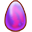
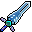
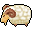
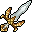

Economia e gold
Sozinho não há mercado entre jogadores: a Store por gold e o gold dos monstros fazem esse papel.
- Equipamento da classeMaior salto de força por gold. Compre quando a peça muda.nv 20 ≈ 8.000 · 40 ≈ 42.000 · 55 ≈ 90.200 · 70 ≈ 160.800
- Montaria nível 1No nível 20. Anda mais rápido entre spots e bosses.60 mil
- Fada do seu atributoTodas as frutas num atributo. Leve Auto Ration (90 mil por 99). Fadas150 mil
- Gemas nível 1–3 na armaDo atributo principal, aba Gemas.5 mil → 47,2 mil
- Amplifier of StriveEXP, para sessões longas de caça.125 mil
- Do 45 em dianteMontaria nv 2 (600 mil) · livros Expert da fada (200 mil) · Improved Fruits (150 mil) · páginas de mochila (500 mil → 10 mi).150 mil – 10 mi
Por classe
| Classe | Gema na arma | Outras gemas | Gasto próprio da classe |
|---|---|---|---|
| Crusader | Fiery + Rage (STR) nas duas espadas; Wind (AGI) nas botas só até chegar à velocidade de ataque 210 | Colossus na armadura | Usa duas armas: forja e gemas custam o dobro. Priorize a da mão direita. |
| Champion | Rage (STR) | Colossus na armadura (tanque) | Ataca devagar: a arma é a melhor compra. Equipamento de Champion do 40 em diante é só do Carsise. |
| Sharpshooter | Explosive (+60 de ataque) no arco ou arma de fogo, depois Furious | Striking nas luvas, Wind nas botas (a AGI vale tanto quanto a DEX para ele) | É frágil: comida de HP e livro Protection da fada antes de luxo. |
| Cleric | Soul (SPR) no cajado | Colossus na armadura | O Energy Shield gasta SP: itens de SP (Strange Fruit, SP Holy Water) e Meditation na fada. |
| Seal Master | Soul (SPR), só se quiser dano | Colossus na armadura e na tatuagem (CON é o principal) | Itens de SP e Meditation; ele vive de selar e correr, não de dano. |
| Voyager | Soul (SPR) | Colossus na armadura | Corais (aba Voyager): Jack 1,5 mil (nível 10), Common 21 mil (30), Expert 71,7 mil (50), Susanoo 111,1 mil (60). Leve reserva. E o barco. |
Rage e Soul: armas · Colossus: escudo, armadura, tatuagem · Striking: luvas (Broken também em arco/arma de fogo) · Wind: botas. Forja e gemas
| Item da Store | Preço em gold |
|---|---|
| Fruta / amplificador de EXP | 75–200 mil |
 Ovo de fada | 80–300 mil (fada de atributo 150 mil, Mordo Junior 300 mil) |
 Visual (arma, roupa, chapéu, asa) | 350–850 mil (comum 800 mil) |
 Montaria | 60 mil (nível 1) · 600 mil (nível 2) · nível 3 só de boss |
| Azrael's, Jades, Bing's, Feng's...: 60–100 mil · Fine Refining Stone 10 mil · catalisadores 30–200 mil | |
| Poções de buff e de barco (aba Miscellaneous) | 30–60 mil |
| Níveis 1 a 3, pelo custo de combinar (do 4 ao 9, só combinando). Nível 1: Broken 5 mil · Cracked 10 mil · Chipped 16,7 mil · Gem 26,7 mil · Great Gem 50 mil · Refining Gem 100 mil | |
 Equipamento da classe | Todas as armas e armaduras da classe na aba dela, e todos os colares, anéis e braceletes na aba Jewelry (comum a todas), em faixas 10-35, 40-55 e 60+. A melhor arma ou armadura do nível custa ~6 × nível2,4 e as mais fracas, proporcionalmente menos; colares e anéis pelo que dão (HP, SP, velocidade, atributos). O ferreiro cobra no máximo esse preço justo e a Store, 30% a mais (conveniência); deslacrados, 3× o deslacre. Nível 20 ≈ 8.000 · 40 ≈ 42.000 · 55 ≈ 90.200 · 70 ≈ 160.800 · 75 ≈ 189.800 |
A Store não usa cash: o saldo mostrado é o seu gold (1 Crystal antigo = 25 mil). Itens da Store também caem de monstros e o NPC paga 30% do preço deles.
- Ronda de bosses80× o gold do nível: Death Knight ~100 mil, Black Dragon ~275 mil. Prêmio cheio 1× a cada 30 min por boss.
- Mini-bosses15×: 6–50 mil cada; alguns renascem em 5 min.
- Dungeons com elite2× gold e drop da loja em dobro: Forsaken City, Demonic World, Pirate Hideout.
- Caçar~380 por monstro no 20 · ~1.430 no 50 · ~2.880 no 80.
- Missões e dropsMissão da história paga ~25 monstros do nível. Drop 3x para vender.
- Itens da Store que caemNPC paga 30%: um visual de 800 mil rende ~240 mil.
- Recompensa diáriaNo dia 7, gold de 250 monstros do seu nível e 1 Million Dollar Note (1 milhão) a cada 10 níveis: a maior fonte de gold da semana.
- Chaos ArgentRodadas de 45 min sem parar: 1 milhão para quem sobreviver.
Abra a sua faixa de nível.
Nível 1–9 · monstro comum 24–128 de gold
Melhor caminho: Faça todas as missões da Senna e das cidades e venda tudo que cair no mercador. Não gaste em equipamento: o do começo vem das missões e da aba da sua classe por 1–3 mil.
Nível 10–19 · monstro comum 146–351 de gold
Melhor caminho: Continue nas missões. Venda os drops (drop 3x enche a mochila rápido). Guarde gold para os kits de 20 e 25.
Nível 20–29 · monstro comum 378–645 de gold
Melhor caminho: Melhor dinheiro da fase: ronda de mini-bosses em Ascaron e Shaitan. Bandit Leader - Adder, Sand Bandit Leader - Garet e Captain Fickle renascem em 5 min; dá para ir de um ao outro sem parar.
| Tipo | Alvo | Onde | Gold | Renasce |
|---|---|---|---|---|
| Mini-boss | Sand Bandit Leader - Garet (28) | Shaitan / Magical Ocean 1171, 3026 | 9.190 | 5 min |
| Mini-boss | Bandit Leader - Adder (25) | Ascaron 1052, 3037 | 7.800 | 5 min |
| Mini-boss | Violent Air Porky (23) | Ascaron 1414, 2896 | 6.918 | 30 min |
| Mini-boss | Smuggler Leader (20) | Ascaron 1624, 3017 | 5.667 | 30 min |
Nível 30–39 · monstro comum 677–994 de gold
Melhor caminho: Forsaken City (sempre aberta): os monstros de lá são elite (gold em dobro) e os capitães são mini-bosses. Fora dela, o Atrocious Yeti King renasce em 5 min.
| Tipo | Alvo | Onde | Gold | Renasce |
|---|---|---|---|---|
| Mini-boss | Sorrow Captain (38) | Forsaken City 153, 136 | 14.355 | 30 min |
| Mini-boss | Sorrow Archer Captain (38) | Forsaken City 176, 139 | 14.355 | 30 min |
| Mini-boss | Atrocious Yeti King (35) | Icicle / Deep Blue 875, 924 | 12.724 | 5 min |
| Mini-boss | Grassland Wolf Champion (33) | Ascaron 1143, 2705 | 11.674 | 30 min |
| Mini-boss | Captain Fickle (30) | Shaitan / Magical Ocean 1506, 3436 | 10.159 | 5 min |
| Mini-boss | Berserk Mad Boar (30) | Ascaron 865, 2971 | 10.159 | 30 min |
| Elite | Sorrow Archer, Sorrow Warrior, Wailing Archer, Wailing Warrior | Forsaken City | 1.421–1.626 cada (354 no mapa) | 30 min |
Nível 40–49 · monstro comum 1.032–1.392 de gold
Melhor caminho: Primeiros bosses grandes: Aries Guardian (renasce em 30 min, no Magical Ocean 2566, 2454) e Death Knight no fim da Forsaken City 3. Entre eles, Jack - Black Sail e Malicious Azure Siren.
| Tipo | Alvo | Onde | Gold | Renasce |
|---|---|---|---|---|
| Boss | Death Knight (45) | Forsaken City 3 30, 33 | 98.198 | 2 h |
| Boss | Aries Guardian (45) | Shaitan / Magical Ocean 2566, 2454 | 98.198 | 30 min |
| Mini-boss | Master Swamp Bog (45) | Dark Swamp 155, 283 | 18.412 | 3 h |
| Mini-boss | Cerebus (45) | Pirate Hideout 173, 963 | 18.412 | 24 h |
| Mini-boss | Behemoth (40) | Eastern Goaf 80, 78 | 15.479 | 1 h |
| Mini-boss | Jack - Black Sail (40) | Shaitan / Magical Ocean 1641, 3748 | 15.479 | 2 h |
| Mini-boss | Wailing Captain (40) | Forsaken City 153, 161 | 15.479 | 30 min |
| Mini-boss | Wailing Archer Captain (40) | Forsaken City 177, 162 | 15.479 | 30 min |
| Mini-boss | Malicious Azure Siren (40) | Ascaron 3050, 400 | 15.479 | 30 min |
| Elite | Crazy Mummy | Forsaken City 3 | 2.218 cada (120 no mapa) | 2 min |
Nível 50–59 · monstro comum 1.434–1.833 de gold
Melhor caminho: Demonic World é a fábrica de gold: centenas de Snow Dolls elite renascendo em 2 min, mais o boss Wandering Soul. Dark Swamp tem o Huge Mud Monster.
| Tipo | Alvo | Onde | Gold | Renasce |
|---|---|---|---|---|
| Boss | Wandering Soul (55) | Demonic World 266, 245 | 132.125 | 2 h |
| Boss | Huge Mud Monster (50) | Dark Swamp 63, 1010 | 114.737 | 2 h |
| Mini-boss | Swamp Champion (55) | Dark Swamp 489, 585 | 24.773 | 3 h |
| Mini-boss | Jungle Guardian (51) | Dark Swamp 491, 577 | 22.153 | 2 min |
| Mini-boss | Master Swamp Watcher (50) | Dark Swamp 365, 1303 | 21.513 | 3 h |
| Elite | Imaginary Snow Doll, Snow Doll Spirit | Demonic World | 2.868–3.303 cada (796 no mapa) | 2 min |
| Elite | Swamp Man, Swamp Warden | Dark Swamp | 2.868–3.303 cada (641 no mapa) | 3 h |
Nível 60–69 · monstro comum 1.879–2.313 de gold
Melhor caminho: Demonic World 2 (elites + Snowman Warlord) e os Baby Icy Dragon do Eastern Goaf (elite, renascem em 1 min).
| Tipo | Alvo | Onde | Gold | Renasce |
|---|---|---|---|---|
| Boss | Snowman Warlord (65) | Demonic World 2 266, 245 | 169.295 | 2 h |
| Elite | Baby Icy Dragon | Eastern Goaf | 4.232 cada (59 no mapa) | 1 min |
| Elite | Demonic Snowman | Demonic World 2 | 3.851 cada (274 no mapa) | 2 min |
| Elite | Skeletar Pirate Ship | Pirate Hideout | 3.758 cada (56 no mapa) | 1 min |
Nível 70–79 · monstro comum 2.363–2.829 de gold
Melhor caminho: Pirate 008 em Autumn Island: 459 elites renascendo em 30 s. Some a ronda de bosses: Fox Sage (30 min), Icy Dragon e Pirate Captain 008 (1 h) e os 4 Black Dragon quando o Chaos Argent abrir.
| Tipo | Alvo | Onde | Gold | Renasce |
|---|---|---|---|---|
| Boss | Icy Dragon (75) | Eastern Goaf 494, 521 | 209.446 | 1 h |
| Boss | Pirate Captain 008 (75) | Icicle / Deep Blue 2388, 3165 | 209.446 | 1 h |
| Boss | Black Jewel (75) | Pirate Hideout 869, 139 | 209.446 | 2 h |
| Boss | Black Dragon Lance (75) | Chaos Argent 59, 97 | 209.446 | 1 min (prêmio: 30 min) |
| Boss | Black Dragon Carsise (75) | Chaos Argent 136, 251 | 209.446 | 1 min (prêmio: 30 min) |
| Boss | Black Dragon Phyllis (75) | Chaos Argent 54, 43 | 209.446 | 1 min (prêmio: 30 min) |
| Boss | Black Dragon Ami (75) | Chaos Argent 125, 42 | 209.446 | 1 min (prêmio: 30 min) |
| Boss | Fox Sage (70) | Icicle / Deep Blue 3135, 2469 | 189.012 | 30 min |
| Elite | Deathsoul Gunboat, Hell Corpse A, Hell Corpse B, Hell Mummy A, Hell Mummy B | Pirate Hideout | 4.725–5.236 cada (162 no mapa) | 2 min |
| Elite | Pirate 008 | Icicle / Deep Blue | 4.725 cada (459 no mapa) | 30 s |
Nível 80–89 · monstro comum 2.882–3.378 de gold
Melhor caminho: Ronda de bosses: Lizardman Warrior Commander (30 min), Phantoms das Mirages, Barborosa e Deathsoul Commander no Pirate Hideout. Wang Xiao Hu na Dream Island às 6h10, 14h10 e 22h10 (230 mil). Huge Cyborg (elite) no Black Dragon Lair.
| Tipo | Alvo | Onde | Gold | Renasce |
|---|---|---|---|---|
| Boss | Barborosa (85) | Pirate Hideout 282, 173 | 252.372 | 2 h |
| Boss | Deathsoul Commander (85) | Pirate Hideout 939, 909 | 252.372 | 2 h |
| Boss | Lizardman Warrior Commander (80) | Icicle / Deep Blue 3227, 3350 | 230.573 | 30 min |
| Boss | Phantom Knight (80) | Shaitan Mirage 120, 109 | 230.573 | 2 h |
| Boss | Warrior Phantom (80) | Thundoria Mirage 145, 63 | 230.573 | 2 h |
| Mini-boss | Evil Tribal Chieftian (85) | Icicle / Deep Blue 3514, 3104 | 47.320 | 30 min |
| Elite | Huge Cyborg | Black Dragon Lair | 6.309 cada (34 no mapa) | 1 min |
Nível 90–100 · monstro comum 3.435–4.020 de gold
Melhor caminho: Bosses de 275–320 mil: Black Dragon, Prehistoric Giant Octopus e Ancient Behemoth (mar de Shaitan). Abaddon Eternal (Hell 5) tem anjos elite de 8 mil cada.
| Tipo | Alvo | Onde | Gold | Renasce |
|---|---|---|---|---|
| Boss | Ancient Behemoth (100) | Shaitan / Magical Ocean 2000, 2000 | 321.600 | 2 h |
| Boss | Black Dragon (90) | Black Dragon Lair 766, 633 | 274.821 | 2 h |
| Boss | Prehistoric Giant Octopus (90) | Pirate Hideout 520, 168 | 274.821 | 2 h |
| Elite | Black Devious Angel, Bloodwing Angel, Death Squirdy, Death Squirty | Abaddon Eternal | 8.040 cada (69 no mapa) | 1 h |